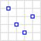
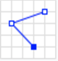
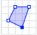
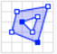
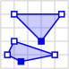
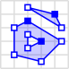

A Tour of the Data Model¶
This section provides a tour of the main features of the Data Model. The Data Model can be viewed at the Department for Transport’s public GitHub repository.
Figure 3 shows a summarised simplified view of the main structures of the Data Model. These structures often contain more detailed sub-models, which are detailed later in this section.
One way to think of the organisation of the information is that each Digital TRO record (D-TRO record) contains the information contained in one TRO. Each D-TRO record needs to contain information on the ‘what’, ‘where’, ‘when’, and ‘who’ concepts. The ‘who’ concept is covered by what conditions apply, and what exemptions or exclusions exist. For TROs that incur a form of payment or charging, the ‘how much’ concept can also be expressed.
As denoted in Figure 3, these concepts are held within different structures.
{kind=link}
Figure 3 Summarised view of the Data Model¶
Each of these structures are explained in turn.
The tour addresses parts of the Data Model as follows:
About a TRO and its Provisions
Defining Regulations (what?)
Specifying Locations for TROs (where?)
Times relating to Condition (when?)
About Conditions and Exclusions - including Vehicle Characteristics (who and what?)
About Tariff rates (how much?)
About a TRO and its Provisions¶
Figure 4 shows some of the top-level concepts of the model, which address details of the TRO as a whole and the provisions it contains.
{kind=link}
Figure 4 Object view of high-level TRO concepts¶
Each TRO will be characterised by one D-TRO record. In other words, all the informational detail of one TRO should be contained in one D-TRO record.
Note: There is a set of metadata attributes that contain information on when the D-TRO record was published by the TRA or their software service provider, and the identity of the publishing entity. These metadata elements form part of the exchange mechanism itself and sit beyond the contents of the Data Model, forming part of the schema used for exchange. Details of these metadata attributes are provided in the Data Specification’s Interface Control Documents.
The source object contains basic information concerning which TRA which created this TRO, the TRA which is the current owner of the TRO, the TRAs that are affected by the TRO. The formal published name of the TRO is also supported.
Additionally, source permits linking to any other digitised TRO that is referenced within this TRO. The cross reference is the unique D-TRO record identifier ID, not a textual name of a TRO.
In each D-TRO record, it is possible to define one or many source objects, with each source object being related to one section or clause in the TRO.
Figure 5 provides the UML class representation of the source object.
{kind=link}
Figure 5 UML model representation of the source object¶
The source object defines several mandatory attributes.
The
sectionattribute indicates the clause, schedule, or article defined by the TRA where the related provisions can be located. The data type is a (free text) string. This attribute is mandatory and must be provided exactly once.The
actionTypeattribute indicates the action type to be carried out by the source, with areferenceID provided to link to the current source on which the action is being executed. The data type is ActionType (enumeration). Possible values are shown in Figure 6. This attribute is mandatory and must be provided exactly once.The
referenceattribute is a unique identifier for each instance of a Source by originating TRA. The precise format of the reference is not prescribed and is left to the discretion of the data supplier. It is, however, mandatory and shall be unique for the originating TRA. The data type is a (free text) String. This attribute is required and must be provided exactly once.The
comingIntoForceDateattribute specifies the date on which the TRO comes into legal effect. The data type is a date. This attribute is conditional and must be provided exactly once for Made Orders. For more details, please see section User and Policy-Driven Needs.The
currentTraOwneridentifies the current Traffic Regulation Authority responsible for maintaining this D-TRO. The value should correspond to a TRA code. The data type is an integer. This attribute is required and must be provided exactly once.The
madeDateattribute indicates the date that the TRO was made, if applicable. The data type is a date. This attribute is conditional and must be provided exactly once for Made Orders. For more details, please see section User and Policy-Driven Needs.The
statementDescriptionattribute provides a description of the overall nature of the prohibition, regulation, or restriction imposed by the TRO. The data type is a (free text) String. This attribute is conditional and must be provided at least once for Made Orders and may appear multiple times if needed. For more details, please see section User and Policy-Driven Needs.The
traAffectedidentifies the Traffic Regulation Authorities whose roads are affected by this D-TRO. The value should correspond to one or more TRA codes. The data type is an integer. At least one entry is required. Note: this must include the creating TRA.The
traCreatoridentifies the Traffic Regulation Authority that created the D-TRO. The value should be a TRA code. The data type is an integer. This attribute is mandatory and must be provided exactly once.The
troNameis the cited name of the Traffic Regulation Order (TRO) as defined by the Traffic Regulation Authority. The data type is a (free text) string. This attribute is mandatory and must be provided exactly once. This should be the full legal name of the order.
The SWA-like codes will be defined is a manner similar to the SWA codes used for street works. These attributes allow the tracing of the original creator and current responsible TRA owner and also those TRAs affected - this supports where boundary changes, authority name changes, etc. It will be quite common for all three attributes to identify the same TRA where no significant changes have occurred, and the TRO content relates only to the originating TRA’s road network. These are referred to as TRA codes.
Note
The TRA codes follow the SWA codes published for Street Works, see Geoplace SWA codes. In D-TRO, leading zeros are removed.
Note the SWA-like codes follow the SWA codes published for Street Works, see Geoplace SWA codes. In D-TRO, leading zeros are removed.
{kind=link}
Figure 6 Enumeration values for sourceActionType¶
The actionType attribute specifies the type of action being taken with respect to a specific version of a D-TRO. It is used to indicate how the current version relates to any earlier version(s) of the same Traffic Regulation Order. The data type is a string constrained to a defined set of controlled vocabulary values. This attribute is mandatory and must be provided exactly once.
Permitted values include:
new- Indicates that the supplied D-TRO version is entirely new and not an amendment of any earlier version.noChange- Indicates that the supplied version does not introduce any changes from the previous D-TRO version.errorFix- Indicates that the current version corrects one or more errors present in an earlier version.amendment- A general indicator that the current version introduces amendments to a prior version, where the specific nature of amendment (full or partial) is not further detailed.informationUpdate- Indicates an update to planned start and end date/times, for a Made record – no other information changes should be made.
This classification allows systems and users to track the evolution of legal traffic regulations and their current applicability in a structured and machine-readable way.
We then move on to the provision object. Provisions are an important concept - each instance of provision represents specifically one type of regulation, subject to one set of homogeneous conditions (conditions, exemptions, and times of applicability, and, if applicable, tariff rates), that are relevant to one or several regulatedPlace(s).
Example
A Traffic Regulation Authority defines in a TRO regulation indicating both a changed speed limit, introduction of a new bus lane and kerbside parking and waiting regulations in the same street location. These would be, at least, three distinct provisions.
Within each TRO, multiple sources may be defined; with each source object being related to one section or clause in the TRO.
Related to each source object, multiple provision objects may be defined. Each instance of provision shall be related to one instance of regulation.
The relationship between the objects provision, regulatedPlace and regulation is shown in Figure 7.
{kind=link}
Figure 7 UML representation of relationship of the provision, regulatedPlace and regulation objects¶
By way of illustration, consider one TRO that contains two provisions. The first provision is, say, a kerbside parking place regulation, regulated to be applicable 24 hours, 7 days per week, relevant to locations A, B and C. The second provision is, say, a kerbside loading place regulation, regulated to be useable between 06:00 am and 08:00 on weekdays, limited to commercial vehicles, relevant to locations D and F.
Figure 8 provides the UML class representation of the provision object.
{kind=link}
Figure 8 UML model representation of the provision object¶
The provision object defines several mandatory attributes.
The
actionTypeattribute indicates the action to be carried out by the provision, with areferenceID provided to link to the current provision the action is being carried out on. See section 3.2. The data type isactionType(enumeration). This attribute is mandatory and must be provided exactly once.The
comingIntoForceDateattribute specifies the date on which the provision comes into legal effect. The data type is a string representing a datetime. This attribute is conditional and may be provided exactly once for Made Orders. For more details, please see section User and Policy-Driven Needs.The
expectedOccupancyDurationattribute specifies the expected duration (in integer days) of the provision’s occupancy. The data type is duration. This attribute is optional but recommended especially for temporary, or special event orders.The
orderReportingPointattribute indicates at which of the recognised reporting points this provision instance rests. Reporting points are described in more detail in section User and Policy-Driven Needs. The data type is OrderReportingPointType (enumeration). This attribute is mandatory and must be provided exactly once.The
provisionDescriptionattribute provides a free text description of the referenced provision. The data type is a string (free text). This attribute is mandatory and must be provided exactly once.The
referenceattribute is a unique identifier for each instance of a provision by the originating TRA. The precise format of the reference is not prescribed and is left to the discretion of the data supplier. It is, however, mandatory and shall be unique for the originating TRA. The data type is a string (free text). This attribute is required and must be provided exactly once.
{kind=link}
Figure 9 Enumeration values for provisionActionType¶
The actionType attribute specifies the type of action being taken with respect to a specific version of a provision in a D-TRO. It is used to indicate how the current version relates to any earlier version(s) of the same provision in the Traffic Regulation Order. The data type is a string constrained to a defined set of controlled vocabulary values. This attribute is mandatory and must be provided exactly once.
Permitted values include:
new- Indicates that the supplied D-TRO version is entirely new and not an amendment of any earlier version.fullAmendment- Indicates that the supplied version fully replaces and amends an earlier version of the D-TRO.partialAmendment- Indicates that the supplied version partially amends an earlier version of the D-TRO.fullRevoke- Indicates that the D-TRO is fully revoked in its entirety.partialRevoke- Indicates that the D-TRO is partially revoked, affecting only certain elements of the earlier version.noChange- Indicates that the supplied version does not introduce any changes from the previous D-TRO version.errorFix- Indicates that the current version corrects one or more errors present in an earlier version.amendment- A general indicator that the current version introduces amendments to a prior version, where the specific nature of amendment (full or partial) is not further detailed.informationUpdate– Indicates an update to planned start and end date/times, for a Made record – no other information changes should be made.
The provision class may also be extended by either an experimentalVariation object or an experimentalCessation object.
The experimentalVariation object can only be applied to experimentalAmendment orderReportingPoint type, where an experimental order is subject to amendment.
The experimentalCessation object can only be applied to experimentalRevocation.orderReportingPoint type, where an experimental order is revoked.
Figure 10 provides the UML class representation of the experimentalVariation and experimentalCessation objects.
{kind=link}
Figure 10 UML model representation of the extension of the provision object¶
This model supports both permanent and time-bound experimental regulations, ensuring flexibility in managing regulatory states and their lifecycle within a traffic order.
Figure 11 provides the UML class representation of the experimentalVariation object.
{kind=link}
Figure 11 UML model representation of the experimentalVariation object¶
The experimentalVariation defines two mandatory attributes.
The
effectOfChangeattribute provides a free-text description of the regulatory effect introduced or modified by the experimental variation. This may include details such as changes to restrictions, permissions, or the introduction of new conditions.The
expectedDurationattribute indicates the expected duration of the experimental variation, expressed as integer days. This defines the planned period over which the variation will be active before reassessment or reversion.
This object supports the structured representation of temporary modifications within a D-TRO and allows for clear communication of their intended scope and timeline.
Figure 12 provides the UML class representation of the experimentaCessation object.
{kind=link}
Figure 12 UML model representation of the experimentalCessation object¶
The experimentalCessation object used to define the characteristics of a cessation applied to an experimental Traffic Regulation Order. This object enables the structured recording of the end of an experimental regulatory provision, including both the cessation date and its rationale.
It is associated with a provision that was enacted under experimental powers and has since been formally ceased, either upon conclusion of its intended trial period or for other operational or legal reasons.
The
actualDateOfCessationattribute specifies the actual calendar date on which the Experimental Order was ceased. This marks the formal end of the legal effect of the provision under experimental authority.The
natureOfCessationattribute provides a free-text explanation of the reason of cessation of Experimental Order. This may include administrative withdrawal, outcome-based termination, policy changes or legal review outcomes.
The experimentalCessation object allows for clear documentation of the conclusion of temporary or trial-based traffic regulations, supporting auditability and historical tracking within the D-TRO framework.
Defining Regulations¶
Figure 13 shows some of the objects concerned with the definition of a regulation in the Model.
{kind=link}
Figure 13 Object view for regulation¶
Each instance of provision shall be related to one instance of regulation.
Each regulation object defines one and only one form of regulation.
Regulations fall into one of four categories:
speedLimitValueBased- which are speed limit regulations based upon a declared speed limit. As the default speed limit for well-lit streets may not be 30 mph, it is necessary to define the value alongside the speedLimitValueType as well as speedLimitNatureType enums.speedLimitProfileBased- which are based on speed limit regulations. For example, one profile is ‘nationalSpeedLimitDualCarriageway’, others are ‘nationalSpeedLimitSingleCarriageway’ and ‘nationalSpeedLimitMotorway’.generalRegulation- characterising a wider range of regulations - see later for further details.offListRegulation- which characterises an extension mechanism for a TRA to declare a form of regulation that is not otherwise covered by the regulations specified in the first two categories.
Figure 14 provides the UML class representation of the regulation object.
{kind=link}
Figure 14 UML model representation of the regulation object¶
The regulation object defines two mandatory attributes.
The
isDynamicattribute indicates whether the regulation identified is dynamic in nature (i.e., the regulation is triggered by some condition - for example, changeable speed limits, access regulations, or triggered by environment conditions). The valuetrueindicates the regulation is dynamic in nature;falseindicates the regulation is static.The
timeZoneattribute enables the time zone applicable to the regulation to be defined. This is important in supporting the management of the definition of clearly specified times that work appropriately in local time zones. The time zone is specified IANA time zone (see http://www.iana.org/time-zones). For regulations in the UK will be ‘Europe/London’.
Figure 15 provides the UML class representation of the generalRegulation object.
{kind=link}
Figure 15 UML model representation of the generalRegulation object¶
The generalRegulation object has one mandatory attribute.
The
regulationTypeattribute holds an indication of the type of regulation. The potential list of regulation types is extensive.
The list of regulationType given in this release of the Data Model is as follows:
|
|
|
|
|
|
|
|
|
|
|
|
|
|
|
|
|
|
|
|
|
|
|
|
|
|
|
|
|
|
|
|
|
|
|
|
|
|
|
|
|
|
|
|
|
|
|
|
|
|
|
|
|
|
|
|
|
|
|
|
|
|
|
|
|
|
|
|
|
|
|
|
|
|
|
Note
It is acknowledged that existing practice for defining TROs in different TRAs may use slightly different terms to describe what fundamentally are the same regulatory concept. To improve the interoperability of TRO data coming from different TRAs, mapping of locally adopted terms to the regulation types given in the list above is essential. Genuinely new, distinct regulation concepts can be provided using the offListRegulation mechanism described below - but this should be rarely used.
Note
The regulationType list is expected to continue and evolve, both as the full spectrum of regulations covered by TROs is established and as regulatory need in the use of TRO changes over time.
DfT welcomes inputs and additional requirements from Traffic Regulation Authorities. Please refer to GitHub issue #6 for further information: https://github.com/department-for-transport-public/D-TRO/issues/6.
Figure 16 provides the UML class representation of the speedLimitValueBased object.
{kind=link}
Figure 16 UML model representation of the speedLimitValueBased object¶
The speedLimitValueBased object defines a speed limit value using structured attributes. It includes three mandatory attributes, as described below
The
typeattribute indicates the type of speed limit being defined. The possible values aremaximumSpeedLimitminimumSpeedLimitnationalSpeedLimitWellLitStreetDefault
The data type is SpeedLimitValueType (enumeration). This attribute is mandatory and must be provided exactly once.
Figure 17 provides the UML class representation of the speedLimitProfileBased object.
{kind=link}
Figure 17 UML model representation of the speedLimitProfileBased object¶
The speedLimitProfileBased object has one mandatory attribute.
- The
typeattribute indicates the type of profile for speed limit being defined for Carriageways and Motorways, with potential values: nationalSpeedLimitDualCarriagewaynationalSpeedLimitSingleCarriagewaynationalSpeedLimitMotorwaynationalSpeedLimit
- The
Note
Note: nationalSpeedLimit applies to all road classes and therefore the data consumer will need to identify the correct class of road for identified locations.
The Data Model is experimental in nature and there is a real-world road network usage and therefore TROs (e.g., consider the relatively recent introduction of e-Scooters). The Data Model supports a couple of different approaches to support extension to new situations and regulations.
If a new form of regulation is required, beyond those already specified in the Data Model, the offListRegulation object can be used.
Figure 18 provides the UML class representation of the offListRegulation object.
{kind=link}
Figure 18 UML model representation of the offListRegulation object¶
The offListRegulation object has three attributes:
The
regulationShortNameattribute is mandatory and enables the TRA to give a short name for the new extended regulation type. This typically is less than 30 characters in length. For example,kerbsideEScooterParkingorkerbsidePublicMobileRobotParking.The
regulationFullTextattribute is mandatory and contains the full descriptive text used in the TRO for the new extended regulation type.The
legislationCrossReferenceattribute, optionally, supports multiple references to the new extended regulation may be provided. This may be a reference to a clause in the TRO or a Uniform Resource Identifier (URI) to supporting published material.
In instances where a temporary regulation temporarily replaces a pre-existing regulation the temporaryProvision object may be used to indicate references to pre-existing regulation(s).
Figure 19 provides the UML class representation of the temporaryProvision object that provide a link between the current focus D-TRO provision and its regulation to the existing provision, which is known to the D-TRO Service, that is being temporarily overridden.
The temporaryOverriddenProvision attribute provides the reference to the overridden existing provision. The data type is a string (free text). This attribute is mandatory and must be provided exactly once.
{kind=link}
Figure 19 UML model representation of the temporaryProvision object¶
Managing Records for TROs and Corresponding Provisions¶
Note
A key enhancement to the Data Model for Beta is the Records Management concept to help link together TROs and provisions, supporting different forms of orders, order provisions and notices that come into the D-TRO Central Service, particularly in the case of amendments, revocations, variations by notice and consolidations.
As part of records management, the D-TRO Service will maintain a ‘live TRO’ list, which may be modified by the receipt of a new inbound Order or Notice received by the D-TRO Service.
We require that all (versions of) Orders and Notices received shall contain ‘minimum contextual content’ (i.e. the who, what, when and how much, if relevant, of any Provision). This requirement is defined by the minimum mandatory data elements within the Data Model. Effectively new versions will replace older versions within the Live TRO list - old versions will remain visible for a while.
Whilst the D-TRO Service currently will hold records for all D-TRO records it has received, D-TRO records management mean that new versions of TROs (and their provisions) - through amendments and revocations - will supersede earlier versions. Each version is considered to be a complete representation of the TRO and its provisions. Older records that have been amended or revoked will be visible in the D-TRO Service for a defined retention period, before being archived.
{kind=link}
Figure 20 Objects View for Records Management related objects¶
The source and provision objects have been described above in About a TRO and its Provisions, with an illustrative example shown in Figure 21.
{kind=link}
Figure 21 Records Management example for source & provision¶
The example shown above illustrates the D-TRO records management in progress. The left-hand side shows a new TRO, being submitted as a D-TRO into the D-TRO Service (via the ‘Create D-TRO’ API endpoint).
It contains multiple sources and provisions. For the purpose of this illustration, we focus on source #1 (with reference TRAxxxx-So-01, and actionType = new). It has two child provisions:
provision #1 with reference: TRAxxxx-Pro-01 and
actionType=new, andprovision #2 with reference: TRAxxxx-Pro-12 and actionType =
new
At a later point in time, the TRA makes an Amendment to the TRO with reference TRAxxxx-SO-01, and actionType = amendment. We highlight two of the provisions in the example:
provision #1, with reference: TRAxxxx-Pro-01 and
actionType=partialAmendment, andprovision #2, with reference: TRAxxxx-Pro-12 and
actionType=fullRevoke
This amendment is submitted via the Update API endpoint, and uses the same Service-generated unique reference (GUID) for the TRO.
As this Update has the same Service-generated unique reference (GUID) as the earlier submitted D-TRO, the newer D-TRO record is considered to fully replace the earlier version. The earlier version will be marked in the D-TRO Service database as not current and replaced by the newer version.
Note
The ‘Create D-TRO’ API endpoint shall only be used for new D-TRO records. Validation constraints will reject any attempt to use this endpoint for updates to a record.
More complex update require specific handling. Take the example illustrated in Figure 22. An initial D-TRO, with reference TRAxxxx-So-01 is submitted to the D-TRO Service, using the ‘Create D-TRO’ API endpoint.
At a later point in time, the TRA makes a new (Consolidation) TRO with reference TRAxxxx-SO-09, and actionType = amendment. We highlight two of the provisions in the example:
provision #1, with reference: TRAxxxx-Pro-01 and
actionType=partialAmendment, andprovision #7, with reference: TRAxxxx-Pro-12 and
actionType=fullRevoke
This later D-TRO has a different Service-generated unique reference (GUID) to the earlier submitted D-TRO.
Even though these provisions have the same references as those already known in the D-TRO Service and actionType metadata showing partialAmendment and fullRevoke, due to the lack of a common Service-generated unique reference (GUID) at the provision level, the D-TRO Service database will not link the records together.
Records are only linked within the D-TRO Service database by sharing a common Service-generated unique reference (GUID) at the D-TRO level.
To correctly update these records it is necessary to also submit an updated version of the earlier submitted D-TRO, with the same Service-generated unique reference (GUID), and appropriate actionType metadata.
{kind=link}
Figure 22 Records Management example for source & provision (more complex)¶
Note
Under this circumstance, the presence of a new version of the D-TRO with reference TRAxxxx-So-01 will be marked as current in the D-TRO Service database. The earlier version will be marked in the D-TRO Service database as not current. The Consolidation record, with reference TRAxxxx-So-09, will be marked as current in the D-TRO Service database.
This means that there will two current versions of the provisions that have been cross referenced in the Consolidation D-TRO. Taking the example of Provision #1, with reference TRAxxxx-Pro-01, after the Consolidation update, current versions will be marked from D-TRO Source #1 (TRAxxxx-So-01) and D-TRO Source #4 (TRAxxxx-So-09) - the contents of these provisions will be identical. This will need to be appropriately managed by the data supplier if further updates occur.
The distinction between fullAmendment and partialAmendment does not change the action of the D-TRO service records management, but rather may be helpful metadata for data consumers to correctly interpret updates between records. The same records management approach applies to partialRevoke.
Specifying Locations for TROs¶
Note
Following key stakeholder engagement, no singular preferred approach to location referencing is mandated at this current stage. During the D-TRO Beta project, feedback provided from data consumers will inform the usability of data provided through the mixed approaches for location referencing.
In order to make future digital TROs useable to the widest set of stakeholders and applications the provision of a coded location that is machine-interpretable and can be related to specific spatially coded locations on digital maps is considered essential. Providing clear information on the geographic spatial location that are subject to regulations is a critical element of the D-TRO record.
No single preferred approach is mandated at this current stage. Therefore, for example, a speed limit TRO provision can be represented either by linear road centreline/reference line features (polyline) or by use of a polygon. Similarly, kerb line regulations can be represented as a polyline, a polygon or both.
The following sections lay out a standardised approach for how the location data for TRO regulations should be handled. All TRO regulation measures shall be defined geospatially, using coordinates and coded in WKT (Well Known Text) format.
The standardised approach covers general concepts, such as where to place spatial polygons or polyline in different circumstances, which is expected to be appropriate for most forms of TRO regulation.
The standardised approach addresses:
Instances where TRO regulations are subject to a direction, such as one-way streets, no entry restrictions, banned turns, etc
Cases where TRO regulations may apply to roads that appear coincident on a map but are grade separated vertically.
The topic of providing additional contextual information that enables the TRO regulation locations to be associated directly with references found in well-known road network model data sets, specifically the National Street Gazetteer.
Other forms of TRO regulation location which can be considered more point-like, such as gate access regulations, some height, width, weight regulations.
A TRO may contain multiple distinct regulations (measures) which relate to potentially numerous regulated places. The shape/geometry of the spatial footprint of a regulated place may not be well defined in existing and current new TROs. Table 1 provides an overview of the forms of shape/geometry for TRO regulations.
Section of whole road (e.g. speed limit, one way street) |
Lane-based (e.g. bus lane restrictions, HOV lanes) |
Point/gate (e.g. bus gate, width access control) |
Zone/Area (polygon) (e.g. Controlled Parking Zone, 20mph speed zone) |
Section of kerb line (e.g. parking.loadin restrictions) |
Turning movement (e.g. banned turns) |
Figure 23 provides the UML class representation of the location related objects.
{kind=link}
Figure 23 UML model representation of location related objects¶
Each instance of provision shall be related to at least one regulatedPlace.
A regulatedPlace represents a real-world identifiable location which is where the provision and related regulation(s) are applicable to. There is no particular limitation or rules concerning specifying a regulatedPlace, or choosing to define the zone of influence into several regulatedPlace - this is a choice of the TRA.
Each regulatedPlace shall have one or, potentially more than one, specified geometry.
If multiple geometry instances exist for a regulatedPlace each geometry instance represents an alternative version (alternative representation) of the same location. They are not intended to define different real-world locations. Each instance of geometry for a regulatedPlace shall have a unique version attribute value (see Figure 26 below). This enables a TRA to represent a regulatedPlace using, say, a polygon-based geometry in one version, and a polyline-based geometry in a second version.
Note
A word on coding of diversion routes; coding diversion routes uses the same sub-model structure below the regulatedPlace as is used for coding the location of the effect of a regulation. For diversion routes, meaningfully, this can be done by use of a linearGeometry object, and associated externalReference(s) (USRNs). A directedLinear object could also be used. The polygon and pointLocation objects should not be used.
It is good practice to provide start and end coordinates that relate to where the diversion route deviates from the primary route (start and end coordinates), and also provide sufficient intermediate points that the path of the diversion route through the road network is clear. Where USRNs are available, reference to all applicable USRNs forming the diversion route shall be supplied.
The sub-model below the regulatedPlace object can also be used to define, optionally, diversion routes.
Figure 24 provides the UML class representation of the regulatedPlace object.
{kind=link}
Figure 24 UML model representation of the regulatedPlace object¶
Each regulatedPlace has a description given in a free-text string in the description attribute. This can support the traditional textual description of the relevant location (e.g. Henbury Way).
In addition:
● The assignment attribute indicate that the regulatedPlace is subject to an assignment has been granted under section 28(1) of the New Roads and Street Works Act 1991
● The busRoute attribute indicates that the regulatedPlace relates to (1) a road outside Greater London which is included in the route of a local service or (2) a road in Greater London which is included in the route of a London bus service
● The bywayType attribute indicates whether the regulatedPlace relates to a footpath, bridle way, cycle track, restricted byway or byway open to all traffic
● The concession attribute indicates whether the regulatedPlace relates to a road which is subject to a concession within the meaning given by section 1(2) of the New Roads and Street Works Act 1991.
● The tramcar attribute indicates that the regulatedPlace relates to a road on which a tramcar or trolley service vehicle is provided
● The type attribute indicates whether the regulatedPlace instance defines the location of the effect of the regulation (regulationLocation) or a diversion route (diversionRoute).
Note: Attributes concession, assignment, tramcar, busRoute and bywayType are mandatory for Made Orders (see User and Policy-Driven Needs).
{kind=link}
Figure 25 regulatedPlaceTypes¶
Each regulatedPlace is linked to at least one, and potentially more than one, geometry object.
Figure 26 provides the UML class representation of the geometry object.
{kind=link}
Figure 26 UML model representation of the geometry object¶
The geometry object has one attribute:
The mandatory
versionattribute which indicates the version number of thegeometryinstance defined.
The OSGB36 / British National Grid Coordinate Reference System (ESPG:27700) shall be used.
OSGB36 is well aligned with other local authority data obligations (NSG, LLPG) and provides a baseline CRS that is anchored on the UK [6].
The details provided in the geometry object alone are not sufficient to define the spatial geometry of the regulatedPlace and provide meaningful semantic content to explain what the given geometry means. Therefore, four specialisations of different forms of geometry are supported.
The four specialisations are:
pointGeometry- where the supplied geometry identifies a point location, the context of this point location is given in thepointGeometryobject.linearGeometry- where the supplied geometry identifies a polyline location, the context of this polyline (linear location) is given in thelinearGeometryobject.polygon- where the supplied geometry identifies polygon (zone or area) location, the context of this polygon location is given in the object.directedLinear- where the supplied geometry a defined movement between two (or linked multiple more) locations (such as defining a banned turn between North Way and East Street), the context of motion (directed linear location) is given in thedirectedLinearobject.
Each is described in turn.
Figure 27 provides the UML class representation of the pointGeometry object.
{kind=link}
Figure 27 UML model representation of the pointGeometry object¶
The use of the pointGeometry class is preferred for point/gate locations.
The pointGeometry object has two mandatory attributes. These are:
representation, which indicates the nature of the point location for a point representation of a regulated place. Acceptable values are:centreLinePoint,trafficSignLocation, andotherpoint, a string conforming to the format required by the WKT standard. Only the use of WKTPOINTandMULTIPOINTare permitted. WhereMULTIPOINTis used the samerepresentationshall apply to all supplied points.
The specific form of standardised data encoding to be used to structure TRO location data in a way that is consistent robust and commonly interpreted. Use of both GeoJSON or WKT (Well Known Text) conventions have been considered. However, the latest edition (2016) of GeoJSON (RFC 7946) only permits the use of WGS84 coordinates, and therefore cannot be used given the coordinate referencing system decision above.
The coding of pointGeometry.point, linearGeometry.linestring, polygon.polygon and directedLinear.directedLineString shall follow the WKT geometry standard - ISO/IEC 13249-3:2016, showing examples of WKT coding, using OSGB coordinate references (SRID = 27700), around the DfT office in Victoria. Only the POINT, LINESTRING and POLYGON WKT constructs, and their multi- equivalents (MULTIPOINT, MULTILINESTRING and MULTIPOLYGON) are permitted.
Type |
Description |
Illustration |
Codified Example |
|---|---|---|---|
|
The |
point: “SRID=27700;POINT(529157 178805)” |
|
|
The |
 | multiPoint: “SRID=27700;MULTIPOINT((320336 126142),(320315 126172))” |
|
The |
 | linestring: “SRID=27700;LINESTRING(529050 178750, 529157 178805, 529250 178860)” |
|
The |
multiLineString: “SRID=27700;MULTILINESTRING((323589 125149, 323340 125227),(323340 125227, 321986 125569),(321986 125569, 320737 126347, 320715 124191))” |
|
|
The |
 | polygon: “SRID=27700;POLYGON((529100 178750, 529200 178750, 529200 178860, 529100 178860, 529100 178750))” |
A |
 | polygon: “SRID=27700;POLYGON((529100 178750, 529200 178750, 529200 178860, 529100 178860, 529100 178750), (529150 178780, 529200 178780, 529200 178830, 529150 178830, 529150 178780))” |
|
|
The |
 | multiPolygon: “SRID=27700;MULTIPOLYGON(((323570 124636, 323482 124835, 323660 124890, 323720 124740,323570 124636)),((323494 124611, 323499 124612, 323450 124734, 323443 124728, 323494 124611)))” |
A |
 | multiPolygon: “SRID=27700;MULTIPOLYGON (((40 40, 20 45, 45 30, 40 40)), ((20 35, 10 30, 10 10, 30 5, 45 20, 20 35), (30 20, 20 15, 20 25, 30 20)))“ |
Figure 28 provides the UML class representation of the linearGeometry object.
{kind=link}
Figure 28 UML model representation of the linearGeometry object¶
The linearGeometry object has four attributes:
The mandatory
representationattribute which identifies where the given linear geometry is represents a linear feature location (e.g., a stretch of kerbline) and is a representation of zonal object (e.g., the reference centreline of a length of road, where the location of applicability is the whole width of the road for the defined length).The mandatory
directionattribute indicates the direction of the applicability of the referenced regulation. Acceptable values arebidirectional,startToEnd, andendToStart. Note this can be used to support the definition of the direction of a direction sensitive regulation on, say, a single road section (e.g. a northbound direction {from the start to the end of the sequence of vertices that exists within the polyline} on a one-way street).
This is distinct from trying to define turning motions between two identifiable road sections. For a linearLocation, the mandatory link to the National Street Gazetteer shall be used to supply all relevant URSN, if they exist. For a directedLinear requires reference to a start and an end USRN (i.e. two).
The mandatory
lateralPositionattribute indicates the lateral position across a road of the linear representation of a regulated place. Acceptable values arecentreline,onKerb,nearandfar. The valuesnearandfarare not currently defined in any detail.The mandatory
linestringattribute is a free text field holding the WKT coded representation of vertices forming a linestring. By default, two coordinate values per vertex are used, however an optional third attribute can be defined in instances where the vertical separation of roads and regulations need to be defined. Only the use of WKTLINESTRINGandMULTILINESTRINGare permitted. WhereMULTILINESTRINGis used the samerepresentation,directionandlateralPositionshall apply to all supplied linestrings. Where these other attributes vary, other instances of thelinearGeometryobjects are required.
Figure 29 provides the UML class representation of the polygon object.
{kind=link}
Figure 29 UML model representation of the polygon object¶
The polygon object has one mandatory attribute:
The
polygonattribute defines a coordinate-polygon that represents the extent of the road subject to the TRO regulation. The mandatory ‘polygon’ attribute is a free text field holding the WKT-coded representation of vertices forming a polygon. By default, two coordinate values per vertex are used, however and optional third attribute can be defined in instances where the vertical separation of roads and regulations need to be defined. For thepolygonattribute, only the use of WKTPOLYGONandMULTIPOLYGONare permitted.
Figure 30 provides the UML class representation of the directedLinear object.
{kind=link}
Figure 30 UML model representation of the directedLinear object¶
The directedLinear object has one mandatory attribute:
The
directedLineStringattribute specialisation is used for specifying regulations for turning movements or directional regulations. The mandatorydirectedLineStringattribute is a free text field holding the WKT-coded representation of vertices forming a polyline. In this case, the sequence of vertices defined is considered to be significant, the first vertex being considered the start of the directedLineString; and the last vertex being considered the end of thedirectedLineString. Intermediate additional vertices can be added if they are considered to clarify routing through the road network, between the start and the end. By default, two coordinate values per vertex are used, however and optional third attribute can be defined in instances where the vertical separation of roads and regulations need to be defined. For thedirectedLineStringattribute, only the use of WKTLINESTRINGis permitted.
Figure 31 provides the UML representation of diversionType object.
{kind=link}
Figure 31 UML model representation of the diversionType object¶
The diversionType object links to different forms of diversion route as shown in the schema below.
{kind=link}
Figure 32 UML model representation of the diversionRouteType object¶
Figure 33 provides the UML representation of externalReference object.
{kind=link}
Figure 33 UML model representation of the externalReference object¶
The externalReference object has one mandatory attribute:
The
lastUpdateDateattribute is a date to specify when this cross reference was established, as USRNs and ESUs do occasionally change.
If no relevant USRN is available, the ``externalReference`` and ``uniqueStreetReferenceNumber`` objects shall not be supplied.
Figure 34 provides the UML representation of uniqueStreetReferenceNumber object. Each regulatedPlace shall be cross-referenced to one or more Unique Street Reference Numbers (USRN) as specified in the National Street Gazetteer (NSG), by use of the usrn attribute, where the road has a USRN.
{kind=link}
Figure 34 UML model representation of the uniqueStreetReferenceNumber object¶
The uniqueStreetReferenceNumber object has three attributes:
The mandatory
nsgStreetNameandnsgSteetNumberare the street name and street reference numbers in the Gazetteer for the Regulated Place.nsgStreetNameandnsgSteetNumberattributes are optional, however, it is mandatory that one attribute shall be filled, for all road lengths that appear in the NSG.The mandatory
usrnattribute is the designated Unified Street Reference Number derived from the NSG.
Multiple URSNs can be defined per geometry, as some streets have multiple USRNs (e.g. Blackstock Road near Finsbury Park in London, which sits on the border of Islington and Hackney).
Times Relating to Regulations¶
Date and time information relating to regulations is defined using a tried and tested sub-model which appears in several European technical standards and is widely deployed.
The full timeValidity sub-model is shown in Figure 35.
{kind=link}
Figure 35 UML model representation of Validity (Time-based) related objects¶
Use of each object and its attributes is given below. For all dates and times, the following should be noted:
All times are expressed in local time (i.e. without reference to UTC time-zone offset). The combination of the regulation.timezone attribute and local times enables data consumers to calculate the times of applicability in absolute times. The rationale for specifying times of applicability in local times aligns with common practice for TROs and reduces the complexity of the data to be delivered.
Dates and times - generally all date and time records shall be expressed using the ISO 8601-1:2019 extended format (e.g.,
YYYY-MM-DDTHH:MI:SS) - note: noZtimezone offset. Some specific exceptions to this rule do exist -eventTimeandpublicationTime, which are both metadata attributes (beyond the scope of this document) are specified using the ISO 8601-1:2019 extended format for UTC datetimes, indicated by the suffixZ(e.g.,YYYY-MM-DDTHH:MI:SSZ).
Figure 36 provides the UML class representation of the timeValidity object.
{kind=link}
Figure 36 UML model representation of the timeValidity object¶
The timeValidity object defines overall dates and times relating to the applicability of a regulation. It shall be used to specify the bounding start and end times of the validity period, within which there may be any number of valid and invalid (exception) periods.
The start date time attribute is mandatory - in the case where the D-TRO record characterises a historic, live regulation and the actual date and time of applicability is unknown the start attribute should be set to the current time.
The isPlaceholderTro attribute specifies if the record is a placeholder one - placeholder TROs are typically defined to support routine maintenance activities - the TRO when made does not contain specific details of when maintenance activities will occur within the overall duration scope of the TRO. When set to true, start should be set at the midnight of 1st of January 1970.
When specific activation dates and time starts and stops are foreseen, the times and dates given in the timeValidity sub-model represent when the TRO and its provisions are foreseen to be activated. These updates can be provided by submission of a D-TRO record, with an orderReportingPointType = informationUpdate, after the submission of a D-TRO record, with a Made status.
For permanent TROs the end attribute may be omitted.
The timeValidity model allows intermittent or variable patterns of time applicability for TRO regulations to be specified.
Figure 37 provides the UML class representaion of the maxStayNoReturn object.
{kind=link}
Figure 37 UML model representation of the maxStayNoReturn object¶
The maxStayNoReturn object specifies conditions concerning the maximum duration for occupancy and the minimum time to be able to return to the same occupancy zone.
The
maximumOccupancyattribute refers to the maximum occupancy duration permittedThe
minimumPeriodForReturnattribute referes to the minimum time duration between previous occupancy and the next occupancy within a defined zone
Figure 38 shows the UML class representation of the period object but also note the two links at the top of the figure, which allow instances of the period object to be specified either as a valid period (i.e., an included period) or an exception period (i.e., an excluded period where the regulation is not applicable).
Note
It is a matter of data quality and integrity on behalf of the data supplier to ensure the dates and times and periods of applicability are complete, consistent and coherent – there is nothing in the Data Model, per se, that stops contradictory or conflicting information being specified. Data suppliers should take appropriate steps to ensure the quality of the data supplied.
The overall timeValidity period defined by the start and end properties in the timeValidity object shall strictly bound (i.e. override) any periods defined in the period object.
Note
Where an invalid (exception) period overlaps (intersects) a valid period the validity shall be regarded as invalid.
{kind=link}
Figure 38 UML model representation of the period object¶
Each instance of period may have a given periodName and also may have specified date times indicating the startOfPeriod and endOfPeriod. If the startOfPeriod or the endOfPeriod are unspecified the date times of the related timeValidity object instance may bound applicability.
An instance of a period object is typically used to define patterns of applicability of a regulation (or exceptions). This is done in conjunction with several ‘child’objects. These are described below. These ‘child’ objects can be combined in several ways to express different patterns.
Example
An illustrative example is a permanent TRO for a parking restriction. This fictitious TRO was made in early 2022 and came in effect on 1st June 2022. It is applicable between 15th June and 30th September each year, and between the hours of 07:00 and 09:30am and again between 16:00 and 18:30 on weekdays, except public holidays.
The optional attribute recurringPeriod, if populated, indicates that the startOfPeriod and endOfPeriod attributes are considered to define the first instance of a recurring period. The attribute recurringPeriod defines the duration between the start of instances of recurring periods. The recurrents attribute is optional and can define a number of repetitions if required - this is not typically the case of permanent regulations.
To support use cases where the start and ends of recurring periods are defined by a changeable date (such as Good Friday, or Easter), the use of the changeableTimePeriod object and its children allow changeable dates to be defined, and these will overide the startOfPeriod and endOfPeriod attributes.
Figure 39 provides the UML class representation of the timePeriodOfDay object.
{kind=link}
Figure 39 UML model representation of the timePeriodOfDay object¶
The timePeriodOfDay object has two mandatory attributes, which indicate the time of day of the start and end of the period with local times being used when defining validity.
In the example given above, the first instance of the timePeriodOfDay object contains the attribute startTimeOfPeriod with the value 07:00am (07:00:00) and the attribute endTimeOfPeriod with the value 09:30am (09:30:00). The second instance of the timePeriodOfDay object contains the attribute startTimeOfPeriod with the value 4:00pm (16:00:00) and the attribute endTimeOfPeriod with the value 6:30pm (18:30:00).
This addresses the local challenge of daylight saving time changes, but should be taken into account when factoring into time-zone based systems.
The value of startTimeOfPeriod must fall before the value of endTimeOfPeriod within a one-day period.
Figure 40 provides the UML class representation of the dayWeekMonth Object. This object and its associated specialisation (calendarWeekInMonth, weekOfMonth, and instanceOfDayWithinMonth) enable identification of patterns of days, weeks and months.
{kind=link}
Figure 40 UML model representation of the dayWeekMonth Object¶
The dayWeekMonth object has two optional attributes:
The
applicableDayattribute indicates days of the week to be included. The attribute may be used between zero and 7 times, with each attribute instance being a unique day of the week. Permitted values are ‘monday’, ‘tuesday’ etc.
In the example above applicableDay would be specified 5 times, with the values ‘monday’, ‘tuesday’, ‘wednesday’, ‘thursday’, and ‘friday’. The order of the attribute values is unimportant.
The
applicableMonthattribute indicates months of the year to be included. The attribute may be used between zero and 12 times, with each attribute instance being a unique month of the year. Permitted values are ‘january’, ‘february’, etc.
Figure 41 provides the UML class representation of the calendarWeekInMonth Object. This object enables specification of calendar weeks within a month to be included. See ISO-8601 for further details. The first calendar week contains the first of the month, with the calendar week starting on a Monday. Several days of the first week of the month may occur in the previous calendar month. By construction, the last week of a preceding month can also be the first week of a subsequent month.
{kind=link}
Figure 41 UML model representation of the calendarWeekInMonth object¶
The calendarWeekInMonth object has one mandatory attribute:
The
weekInMonthattribute indicates the Calendar week of the month to be included. The attribute shall be used between one and 6 times, with each attribute instance being a unique Calendar week in month identifier. Permitted values are ‘firstWeekofMonth’, ‘secondWeekOfMonth’ … to ‘sixthWeekOfMonth’.
Figure 42 provides the UML class representation of the weekOfMonth object. The weekOfMonth object provides information concerning an identifiable week in a calendar month – where the week starts on the same day of the week as the month. E.g., if the first of the month is a Wednesday, each week in a month identified here also starts on a Wednesday.
{kind=link}
Figure 42 UML model representation of the weekOfMonth object¶
The weekInMonth object has one mandatory attribute:
The
applicableWeekattribute indicates the week of the month to be included. The attribute shall be used between one and 5 times, with each attribute instance being a unique week in month identifier. Permitted values are ‘firstWeek’, ‘secondWeek’ … to ‘fifthWeek’.
Figure 43 provides the UML class representation of the instanceOfDayWithinMonth object. The instanceOfDayWithinMonth object enables identification of instances of a day of the week in a month; for example, the second Tuesday in the month. When using this object, at least one applicableDay instance shall be specified in the related object dayWeekMonth.
{kind=link}
Figure 43 UML model representation of the instanceOfDayWithinMonth object¶
The instanceOfDayWithinMonth object has one mandatory attribute:
The
applicableInstanceOfDayWithinMonthattribute indicates the identified day instance within the month to be included. The attribute shall be used between one and 5 times, with each attribute instance of an identified day in a month. Permitted values are ‘firstInstance’, ‘secondInstance’ … to ‘fifthInstance’. This can be used to define patterns such as the second and fourth Tuesday and Friday in the month.
Figure 44 provides the UML class representation of the specialDay object. The specialDay object indicates the characteristics of an identified (special) day.
{kind=link}
Figure 44 UML model representation of the specialDay object¶
The specialDay object has three attributes:
The mandatory
intersectWithApplicableDaysattribute, specified as a boolean. Whentrue, the period is the intersection of applicable days and this special day. Whenfalse, the period is the union of applicable days and this special day.The mandatory
specialDayTypeattribute which indicates the type of the special day. Permitted values are defined in thespecialDayTypeenumeration list. Values include: ‘easter’, ‘marketDay’, ‘matchDay’, ‘publicHoliday’ etc.The optional
publicEventattribute which indicates what type of public event is associated with thisspecialDay. Permitted values are defined in the extensivepublicEventTypeenumeration list. Values include: ‘agriculturalShow’, ‘airShow, ‘artEvent’, etc.
Figure 45 provides the UML class representation of the publicHoliday object. The object publicHoliday with its mandatory attribute publicHolidayName enables the public holiday to be named.
{kind=link}
Figure 45 UML model representation of the publicHoliday object¶
Figure 46 provides the UML class representation of the changeableTimePeriod object.
{kind=link}
Figure 46 UML model representation of the changeableTimePeriod object¶
Figure 47 provides the UML class representation of the changeableTimePeriodStart object. There is a mirror image object called changeableTimePeriodEnd. Both objects work in a similar manner. A ‘fuzzy time’ period is defined in several European standards as the time period with non-precise characteristics. However, this is actually a poor definition for the concept. The actual concept is a time qualification that is not fixed and may be variable in nature. The variation may be highly predictable (such as dusk or dawn), or defined by external factors and authorities (such as school terms times in a specific locality). Hence in the D-TRO Data Specification we do not use the term ‘Fuzzy Period’, but rather changeableTimePeriod.
Use of the changeableTimePeriodStart object and/or the changeableTimePeriodEnd object enable a period to be defined using a variable date time start or end or both.
{kind=link}
Figure 47 UML model representation of the changeableTimePeriodStart object¶
{kind=link}
Figure 48 UML model representation of the changeableTimePeriodEnd object¶
The changeableTimePeriodStart object (and the changeableTimePeriodEnd object), shown in Figure 47 and Figure 48 respectively, each has one attribute:
The mandatory
startTypeattribute (endTypefor thechangeableTimePeriodEndobject), which indicates the type of characteristic time measure being used. Values include:dawn,dusk,holiday, andexternal.
The changeableTimePeriodStart and changeableTimePeriodEnd objects define the nature of the changeableTimePeriod. They do not provide the specific means to determine what the instances of period starts and ends are. This is done by one of three mechanisms:
Use of the
changeableTimePeriodSourceobject which points to an external data resource.Use of the
changeableTimePeriodEntryobject or objects gives specific date time value which is associated with a start or stop. Use of several objects can build up a schedule or calender of start entries and/or stop entries.By use of the linkage between a
changeableTimePeriodStartobject and/orchangeableTimePeriodEndobject with thespecialDayobject - i.e. indicating that the start and/or end is a special day (e.g. Easter).
Figure 49 provides the UML class representation of the changeableTimePeriodSource object.
{kind=link}
Figure 49 UML model representation of the changeableTimePeriodSource object¶
The changeableTimePeriodSource object has two mandatory attributes:
The
definitionattribute is a free-text string that describes the nature of the external data source.The
sourceLocatorattribute is a URI hyperlink providing the accessible location for retrieval of the external data source.
Each instance of changeableTimePeriodSource will have a definition to explain the nature of the source of data that provides the accurate timings. E.g. for a changeable time period of school term times, it could be a Government website which shares these dates. The sourceLocator will then provide the specific data elements from the hyperlink of the website through the URI.
Figure 50 provides the UML class representation of the changeableTimePeriodEntry object.
{kind=link}
Figure 50 UML model representation of the changeableTimePeriodEntry object¶
The changeableTimePeriodEntry object has one mandatory attribute:
The
entryattribute provides one date/time entry defining a specific date and time.
An example of changeableTimePeriodEntry, when linked to a changeableTimePeriodStart, could represent a list of school terms start dates, e.g. entry 1 - 2024-09-05T08:00, entry 2 - 2024-11-04T08:00, entry 3 - 2025-01-07T08:00, with equivalent entries linked to the changeableTimePeriodEnd.
Summarizing the use of time concepts in D-TRO¶
Made Date - At the TRO level, in the source object, the Made Date for the TRO is defined in the madeDate attribute.
Coming into force date - The coming into force date shall be defined at the TRO level in the source object. If the coming into force date for any of the included provisions is different to that of the TRO as a whole, the coming into force date for the specific provision shall be supplied using the comingIntoForceDate attribute in the provision object. If omitted at the provision level the coming into force date is taken to be the same as the TRO source coming into force date.
Activation times - Dates and times within the timeValidity model represent the dates and times that the related regulation and provision are activated (operationally active time). The timeValidity sub-model supports a wide range of different time patterns for the applicability and activation of each provision.
In cases where the coming into force date represents when the provision is activated, the details of the first date/time given in the timeValidity model shall mirror the coming into force date.
For periodic maintenance style TROs (which create windows of opportunity to activate the TRO on sections of the network within a defined overall period), the times and dates given in the timeValidity sub-model represent when the TRO and its provisions are foreseen to be activated.
Varied or ceased Experimental TROs - the draft Secondary Legislation requires:
where the operation of the order, or any provision of the order, is modified or suspended in accordance with section 10(2) of that Act, the planned duration of the modification or suspension shall be recorded in the experimentalVariation object; OR where any prohibition, regulation or restriction effected by the order, or by any provision of the order, ceases to have effect earlier than the date provided under regulation 4(21)(f) or 4(2)(c). the actual date on which the order or provision ceased to have effect shall be recorded in the experimentalCessation object;
Recording of actual start and end dates and times - the draft Secondary Legislation requires: This regulation applies to an order made, or a notice issued, under section 14 (temporary prohibition or restriction on roads) of the 1984 Act( ) where the traffic regulation authority is making that order or issuing that notice for the purpose of undertaking works itself.
A traffic regulation authority must provide:
the actual start time of each provision in the order or notice;
the actual stop time of each provision in the order or notice;
Each relevant start and stop shall be recorded in the actualStartOrStop object.
About Conditions and Exclusions¶
Being able to specify conditions that apply to regulations is a key element of D-TRO modelling. Such conditions enable regulation properties to detail, for example, width restrictions; access restrictions by vehicle type; conditions applied under different weather conditions, etc.
The D-TRO model for conditions is used to specify conditions or constraints that apply to a regulation. These include time period, vehicle type, weather conditions, etc.
Figure 51 provides the UML class representation of the condition related objects.
{kind=link}
Figure 51 UML model representation of condition related objects¶
In any instance where more than one condition is to be included in the definition of a provision, the concept of a conditionSet shall be used.
A conditionSet object may be specified using a sequence of conditions with logical operators specifying the relationship of the conditions. An example is as follows:
<conditionSet operator="OR">
<conditionSet operator="AND">
<timeValidity />
<vehicleCharacteristics />
</conditionSet>
<conditionSet operator="AND">
<timeValidity />
<vehicleCharacteristics />
</conditionSet>
</conditionSet>
Or, the same example in an alternate notation:
((timeValidity and vehicleCharacteristics) or (timeValidity and vehicleCharacteristics))
A condition stating vehicleType = emergencyVehicle and negate = true would mean all vehicles except those of type emergencyVehicle.
An unset negate value means the same as false, i.e., no negation applied.
An illustrative example, in Figure 52, shows the use of conditionSet and condition objects, with sample code.
{kind=link}
Figure 52 Illustrative example of use of conditionSets and conditions¶
Listing 1 shows an extract of the JSON coding of the same conditions as shown in Figure 52.
{
"conditionSet": [
{
"operator": "and",
"conditionSet": [
{
"operator": "or",
"condition": [
{
"negate": false,
"vehicleCharacteristics": {
"maximumHeightCharacteristic": {
"vehicleHeight": 2.5
}
}
},
{
"negate": true,
"vehicleCharacteristics": {
"vehicleType": "bus"
}
},
{
"operator": "and",
"condition": [
{
"negate": false,
"vehicleCharacteristics": {
"vehicleType": "taxi"
}
},
{
"negate": false,
"vehicleCharacteristics": {
"vehicleUsage": "access"
}
}
]
}
],
"condition": {
"timeValidity": {
"start": "2024-08-22T08:00:00",
"end": "2024-08-22T20:00:00",
}
}
}
]
}
]
}
{kind=link}
Figure 53 UML model representation of the condition object¶
The condition object has only the negate attribute, as explained above.
Figure 54 provides the UML class representation of the conditionSet object.
{kind=link}
Figure 54 UML model representation of the conditionSet object¶
The conditionSet object has only the operator attribute, as explained above. The operator attribute supports the permissible values and, or and xor.
Figure 55 provides the UML class representation of the roadCondition object.
{kind=link}
Figure 55 UML model representation of the roadCondition object¶
The roadCondition object contains only the mandatory roadType attribute. Permissible values include, but are not limited to: motorway, trunkRoad, and other.
The occupantCondition object contains only the disabledWithPermit attribute which is defined as a boolean data type.
Figure 56 provides the UML class representation of the numberOfOccupants object.
{kind=link}
Figure 56 UML model representation of the numberOfOccupants object¶
The numberOfOccupants object has two mandatory attributes:
The
operatorattribute specifies the operator to be used in the characteristic comparison operation. Permissible operators includeequalTo,greaterThan,greaterThanOrEqualTo,lessThan, andlessThanOrEqualToThe
valueattribute provides the integer numeric value for the boundary condition
Example
Up to two instances of the numberOfOccupants condition can be used to optionally define both an upper and lower boundary, using a combination of the operator and value attributes. For example, the following would permit valid use for vehicles between 2 and 8 occupants, inclusive.
{
"numberOfOccupants": [
{
"operator": "greaterThanOrEqualTo",
"value": 2
},
{
"operator": "lessThanOrEqualTo",
"value": 8
}
]
}
Figure 57 provides the UML class representation of the driverCondition object.
{kind=link}
Figure 57 UML model representation of the driverCondition object¶
The driverCondition object has one attribute:
The
driverCharacteristicsTypeattribute indicates a specific type of driver characteristic. Permissible values include, but are not limited to,disabledWithPermit,learnerDriverandlocalResident
Figure 58 provides the UML class representation of the accessCondition object.
{kind=link}
Figure 58 UML model representation of the accessCondition object¶
The accessCondition object has two attributes:
The
accessConditionTypeattribute indicates an access restriction type. Permissible values include, but are not limited to,accessOnly,loadingAndUnloadingandthroughTrafficThe
otherAccessRestrictionattribute indicates a condition controlling access
Figure 59 provides the UML class representation of the permitCondition object.
{kind=link}
Figure 59 UML model representation of the permitCondition object¶
The permitCondition object has the following attributes:
The mandatory
typeattribute indicates the type of the referenced permit. Permissible values includedoctor,business,residentandother. Note that the permissible values list is under review and may modify in future releases of the Data ModelThe optional
schemeIdentifierattribute supports a free text name for the permit scheme referencedThe optional
permitIdentifierattribute supports multiple instances for an identifier for the permit scheme referenced (e.g., resident parking zone A)The optional
whereToApplyForPermitattribute provides a web address (URL) of the competent authority where an application for a permit can be requestedThe optional
whereToCallForPermitattribute provides a contact telephone number of the competent authority where an application for a permit can be requestedThe optional
locationRelatedPermitbooleanattribute which indicates if the referenced permit related to a specified geographyThe optional
maxDurationOfPermitattribute which indicates the maximum validity duration a permit can have, specified in minutesThe optional
maximumAccessDurationattribute expresses the maximum duration that is permitted in relationship to use of this permit. Specified in minutesThe optional
minimumTimeToNextEntryattribute expresses the minimum duration between last use of permit and next permitted use of permit. This is often referred to as the no return timeSpecified in minutes
Figure 60 provides the UML class representation of the authority object which is linked to permitCondition.
{kind=link}
Figure 60 UML model representation of the authority object¶
The authority object has only one attribute - The name attribute indicates the governing authority that has applied the relevant permit condition.
Figure 61 provides the UML class representation of the permitSubjectToFee object which is linked to permitCondition.
{kind=link}
Figure 61 UML model representation of the permitSubjectToFee object¶
The permitSubjectToFee object has four optional attributes:
The
amountDueattribute indicates the monetary amount, in pounds sterling, related to the use of or purchase of the permit. This value is expressed in UK Sterling, with two decimal points, e.g.8.50which represents £8.50.The
paymentInformationattribute provides a web address (URL) for further information on the permit and related payment.
Figure 62 provides the UML class representation of the nonVehicularRoadUserCondition object.
{kind=link}
Figure 62 UML model representation of the nonVehicularRoadUserCondition object¶
The nonVehicularRoadUserCondition object has the following attribute:
The
nonVehicularRoadUserattribute indicates restriction or permissions relating to non-vehicular road users. Permissible values include, but are not limited to,pedestrians,herdedAnimals, etc.
The otherCondition object indicating an exceptional other condition, not covered by other conditions
Figure 63 provides the UML class representation of the otherCondition object.
{kind=link}
Figure 63 UML model representation of the otherCondition object¶
The otherConditionDescription attribute is optional and contains free text description of the other condition.
Figure 64 provides the UML class representation of the occupantCondition object.
{kind=link}
Figure 64 UML model representation of the occupantCondition object¶
Specifying Vehicle Conditions¶
The vehicleCharacteristics-related objects, specified in this section, comprise a sub-model for defining the characteristics of vehicles.
The information that is modelled in vehicleCharacteristics objects identifies a set of vehicle characteristics, many of whose values can be specified using the maximum dimension characteristic.
Figure 65 provides the UML class representation of the vehicleCharacteristics-related objects.

Figure 65 UML model representation of vehicleCharacteristics-related objects¶
The objects maximumGrossWeightCharacteristic, maximumHeightCharacteristic, maximumLengthCharacteristic, maximumWidthCharacteristics, heaviestAxleWeightCharacteristic and numberOfAxlesCharacteristic all follow the same basic pattern, which is described below.
We will use the maximumGrossWeightCharacteristic object to illustrate this pattern. This enables limits for maximum gross weight to be defined. If gross weight limits are defined in theory there could be two limits - an upper bound (maximum weight) and a lower bound (minimum weight), as shown in Figure 66.
In practice, upper bounds are specified in TROs, so the maximum characteristic is used.
{kind=link}
Figure 66 Example of boundary conditions (upper and lower bounds)¶
Error
Here we have some text around the numberOfAxlesCharacteristic object but the figure immediately below is for the maximumGrossWeightCharacteristic object.
The published version mentions [-1..2] whereas the PDF version says [0..2].
The grammar needs checking, also.
Figure 67 provides the UML class representation of the numberOfAxlesCharacteristic object, to support the potential for both upper and lower bounds to be specified up to two instances, depicted by the [-1..2] in the UML representation, of numberOfAxlesCharacteristic can be linked to each instance of vehicleCharacteristics.
{kind=link}
Figure 67 UML model representation of the maximumGrossWeightCharacteristic object¶
The maximumGrossWeightCharacteristic object has three attributes:
The mandatory
grossVehicleWeightattribute provides the numeric value for the boundary condition. It is specified in metric tonnes, with one decimal placeThe mandatory
typeOfWeightattribute identifies different forms of weight limit that may be specified. Permissible weight types includeactual,combinedMaximumPermitted,maximumPermittedandunladen.
This pattern is replicated as follows:
Object |
Numeric attribute |
Unit |
Numeric type |
|---|---|---|---|
|
|
Tonnes |
Decimal |
|
|
Metres |
Decimal |
|
|
Metres |
Decimal |
|
|
Metres |
Decimal |
|
|
Tonnes |
Decimal |
|
|
- |
Integer |
Attributes similar to typeOfWeight are not replicated in the other objects listed.
Figure 68 provides the UML class representation of the vehicleCharacteristics object.
{kind=link}
Figure 68 UML model representation of the vehicleCharacteristics object¶
The vehicleCharacteristics object has six optional attributes:
The
fuelTypeattribute specifies optionally multiple fuel types used by vehicles, within this condition. Permissible fuel types include, for example,petrol,diesel,hydrogen,lpg,battery, etc.The
loadTypeattribute specifies optionally one type of load carried by the vehicle. Permissible load types include, for example,empty,dangerousGoods,explosiveMaterials.The
vehicleEquipmentattribute specifies optionally one type of vehicle equipment. Permissible equipment types include, for example,snowChainsInUse,dippedHeadlightsInUse,electronicTollEquipment, etc.The
vehicleTypeattribute specifies optionally multiple types of vehicles. Permissible vehicle types include, for example,taxi,pedalCycle,car,goodsVehicle,bus, etc.The
vehicleUsageattribute specifies optionally one usage type (i.e. for what purpose is the vehicle being used). Permissible vehicle usage types include, for example,accessToOffStreetPremises,localBuses,privateHireVehicle,guidedBus, etc.The
yearOfFirstRegistrationattribute specifies optionally one registration year. Year is specified as an integer in the formatYYYY(e.g. 2008).
Figure 69 provides the UML class representation of electricChargingCharacteristic object.
{kind=link}
Figure 69 UML model representation of the electricChargingCharacteristic object¶
The electricChargingCharacteristic object has two optional attributes:
The
chargingattribute specifies that the connected vehicle is currently being charged.The
vehicleConnectedToChargerattribute specifies that the vehicle is connected to the infrastructure electrical charging system.
Figure 70 provides the UML class representation of the emissions object.
{kind=link}
Figure 70 UML model representation of the emissions object¶
The emissions object has two optional attributes:
The
emissionClassificationEuroattribute specifies the minimum Euro emission classification the vehicle(s) have to comply with according to the 1970 Directive 70/220/EEC and its several amendments
To specify emissionClassificationEuro properly, it is necessary to define in the vehicleCharacteristics object:
the corresponding vehicle type (e.g., car for M1, miniBus for M2, lightCommercialVehicle for N1 or largeGoodVehicle for N2)
and fuel type (e.g., diesel for CI engines or petrol for PI engines)
Note
Euro V and Euro VI are used for emissions of lorries only.
The
emissionClassificationOtherattribute specifies optionally multiple free-text description of a classification type for vehicle emissions, distinct from the Euro classifications.
Figure 71 provides the UML class representation of the valueRange object.
{kind=link}
Figure 71 UML model representation of the valueRange object¶
The valueRange object is defining a measurable quantity and related units and has two mandatory attributes:
The
classattribute specifies the type of measured value under consideration and links to different forms of value range as shown in the schema below.
Figure 72 UML model representation of valueRangeClassEnum object
{kind=link}
Figure 72 UML model representation of the valueRangeClassEnum object¶
The
unitattribute specifies the unit used for the measure and links to the different forms of unit of measure as shown in the schema below.
Figure 73 UML model representation of unitOfMeasureEnum object
{kind=link}
Figure 73 UML model representation of the unitOfMeasureEnum object¶
Figure 74 provides the UML class representation of the valueRangeBoundary object.
{kind=link}
Figure 74 UML model representation of the valueRangeBoundary object¶
The valueRangeBoundary object is defining a range boundary value and operator related to that boundary and has two mandatory attributes:
The
comparisonOperatorattribute specifies comparison values and links to the different forms of comparisons as shown in the schema below.
comparisonOperatorType provides the UML class representation of the comparison operator type object.
{kind=link}
The
valuequantify measure forming a measure boundary.
About Tariff Rates¶
Figure 75 provides the UML class representation of the rate-related objects.
{kind=link}
Figure 75 UML model representation of the rate-related objects¶
Information concerning tariff rates may be associated with a defined condition.
The rates sub-model shown here is experimental. It is derived from a richer model that has been specified within the APDS [7] specifications which have been published as an ISO Technical Specification ISO TS 5206-1:2023.
Note
The 2023 DfT D-TRO Alpha project prototyping begun examining whether this rates sub-model has sufficient functionality to meet the needs of describing rates and tariff in D-TROs. Further work during the Beta Project testing is needed.
Figure 76 provides the UML class representation of the rateTable object. Each instance of the condition object may optionally be linked to one instance of the rateTable object. A rateTable is described as specific set of rate charges relating to one or more locations and one set of condition criteria.
{kind=link}
Figure 76 UML model representation of the rateTable object¶
The rateTable object has two optional attributes:
The
typeattribute specifies the type of rate in use. Permissible types are:daily,hourlyThe
additionalInformationattribute provides a web address (URI) locator for supplementary additional information concerning use of the rate table
Each rateTable object contains one or more rateLineCollection objects. A rateLineCollection is defined as group of rate line elements that logically group together within one rate table, e.g., such as the rate lines for the different tiers of a time-based tier rate table.
Figure 77 provides the UML class representation of the rateLineCollection object.
{kind=link}
Figure 77 UML model representation of the rateLineCollection object¶
The rateLineCollection object has the following attributes:
The mandatory
applicableCurrencyattribute which defines the monetary currency that rates are specified in this rate line collection. Permissible values areGBPandEURThe optional
endValidUsagePeriodattribute which defines the end time for the validity of this rate line collectionThe optional
maxTimeattribute which defines a maximum session duration to be applied to this rate line collection. Defined asstringtype, formatted using an ISO 8601-1 duration formatThe optional
maxValueCollectionattribute which defines the maximum monetary amount to be applied in conjunction with use of this rate line collection. Defined in applicable currency with 2 decimal placesThe optional
minTimeattribute which defines a minimum session duration to be applied to this rate line collection. Defined asstringtype, formatted using an ISO 8601-1 duration formatThe optional
minValueCollectionattribute which defines the minimum monetary amount to be applied in conjunction with use of this rate line collection. Defined in applicable currency with 2 decimal placesThe optional
resetTimeattribute which defines the time that rate resets. Example: a rate table that charges £2 per hour with a max value collection of £10, resets at 2 am. At 2 am, the £2 per hour fee would start to charge until the £10 is reachedThe mandatory
sequenceattribute which is specified as an incrementing integer which is an indicator giving the place in sequence of this rate line collection within therateTableThe mandatory
startValidUsagePeriodattribute which defines the start time for the validity of this rateLineCollection
Each rateLineCollection object contains one or more rateLine objects. Figure 78 provides the UML class representation of the rateLine object. A rateLine is defined as a specific rate element of a rate line collection within a specific rate table.
{kind=link}
Figure 78 UML model representation of the rateLine object¶
The rateLine object has the following attributes:
The mandatory
sequenceattribute which is specified as an incrementing integer which is the ordered sequence of thisrateLineinstance within therateLineCollection. Used to define the order of operation of multiple rate linesThe mandatory
typeattribute which indicates the nature of the rate line. Permissible values are:flatRate,incrementingRate,flatRateTierandperUnitThe optional
descriptionattribute which provides a free-text description associated with thisrateLineThe optional
durationStartattribute, which indicates the start time for the applicability of the specific rate line, generally with respect to the start of the parking or other mobility session. e.g., the start of a time-based tier charge rateThe optional
durationEndattribute, which indicates the end time for the applicability of the specific rate line, generally with respect to the start of the parking or other obility session. e.g., the end of a time-based tier charge rateThe optional
incrementPeriodattribute, the time period for incrementing the rate line charge. If set to the same as the duration of the period between thedurationStartanddurationEndthe increment will occur once per period, i.e., a flat rate time-based tier charge rate. The duration is defined in integer minutesThe mandatory
valueattribute which indicates the value of the fee to be charged in respect of this rate line. Defined in applicable currency with 2 decimal placesThe optional
minValueattribute which is the minimum monetary amount to be applied in conjunction with use of this rate line collection, regardless of the actual calculated value of the rate line. Defined in applicable currency with 2 decimal placesThe optional
maxValueattribute which is the maximum monetary amount to be applied in conjunction with use of this rate line collection, regardless of the actual calculated value of the rate line. Defined in applicable currency with 2 decimal placesThe optional
usageConditionattribute which indicates conditions on the use of this rate line. Permissible values are:fixedDuration,fixedNumber,once,unlimited
About Consultations¶
This section of the Data Model is designed to permit basic information relating to a consultation to be coded and exchanged.
Note
The expectation, subject to secondary legislation following consultation, is that information on consultations would be made at the time of the notice of proposals (i.e. commencement of consultation). There is no expected requirement for the provision of information concerning consultations at other points in the lifecycle, at this time.
Figure 79 provides the UML class representation of the consultation related objects.
{kind=link}
Figure 79 UML model representation of the consultation related object¶
The consultation object has numerous attributes:
The mandatory
consultationNameattribute refers to the name of the TRO that the TRA has published under consultationThe mandatory
endOfConsultationattribute is a date / time indicating the end of the Consultation periodAn optional free-text string with the
howToCommentattribute specifying how to comment on the proposal which is the subject of the consultationAn optional free-text string with the
localReferenceattribute for an identifier for the consultation defined by the Local AuthorityAn optional free-text string with the
pointOfContextEmailattribute giving the email address location to support receipt of comments / objections to consultation proposalsAn optional free-text string with the
pointOfContactAddressattribute giving the postal or office address location to support receipt of comments / objections to consultation proposalsAn optional date / time field with the
startOfConsultationattribute giving time and date of the start of the consultation periodAn optional free-text string with the
statementOfReasonattribute giving the Statement of ReasonAn optional free-text string with the
urlAdditionalInformationattribute giving the web address (URL) for where to find further information related to the consultation
Extending the Data Model¶
The Data Model (and associated schema) defines categorised lists of short name terms that represent different concepts and choices. Examples of these lists include regulation type, vehicle type, permit type, etc.
It is intended that the Data Model covers a broad spectrum of choices covering a vast majority of TROs to be produced in the future.
Proposed Statutory Guidance and best practice documentation will strongly encourage reuse of standardised concepts. However, it is prudent that the Data Model also supports the ability to define new or unusual concepts.
Therefore, the ability to support additional enumerations would be prudent for several of the enumerated lists existing in the Data Model. These include:
permitTypepayloadTypevehicleUsageTypeemissionsClassificationEuroTypefuelTypevehicleEquipmentTypevehicleType
To maintain the simplicity in the Data Model, it is easiest to add an “other” enumeration value to each of the enumerated lists stated. For regulationType, there is the off-list regulation mechanism referred to earlier in the guide that will handle additional enumerations.
In instances where the ‘other’ enumeration is used further information shall be required. In each case the user (the Local Authority) would be required to provide a unique enumeration short name (distinct from short names that appear in the Data Model), plus a robust definition.
The use of ‘other’ on its own shall not be permitted.
Rather than adding this extension mechanism to each relevant enumerated list in the Data Model, a generic extension mechanism has been added to the model.
Figure 80 provides the UML class representation of the extensionEnumeration object.
{kind=link}
Figure 80 UML model representation of the extensionEnumeration object and related enumeration¶
The extensionEnumeration object has numerous attributes:
The
definitionattribute is a string for the complete definition of the enumerationThe
enumeratedListattribute reflects the list which is being extendedThe
definitionattribute is a free-text string giving complete definition for the enumeration
{
"negate": false,
"vehicleCharacteristics": {
"vehicleUsage": "other",
"vehicleUsageTypeExtension": {
"definition": "srteet cleaning, example",
"enumeratedList": "vehicleUsageType",
"value": "cleaner"
}
}
}